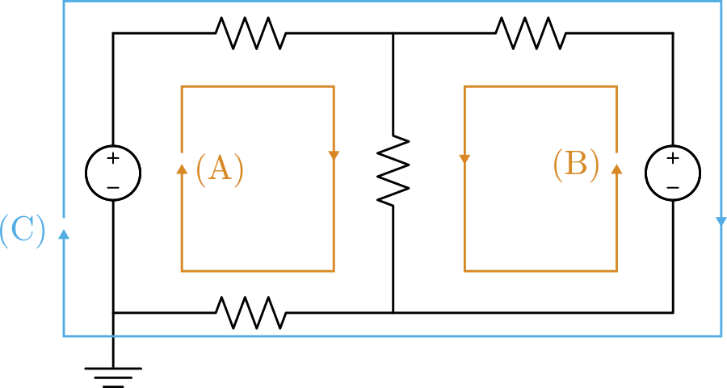
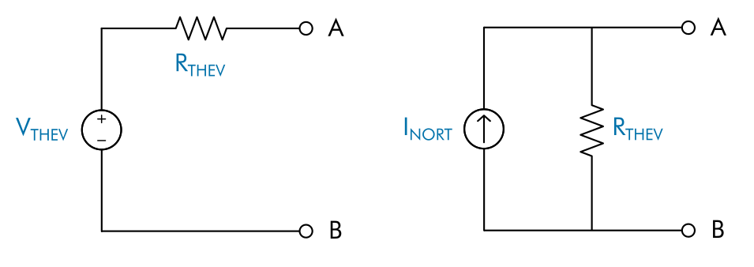
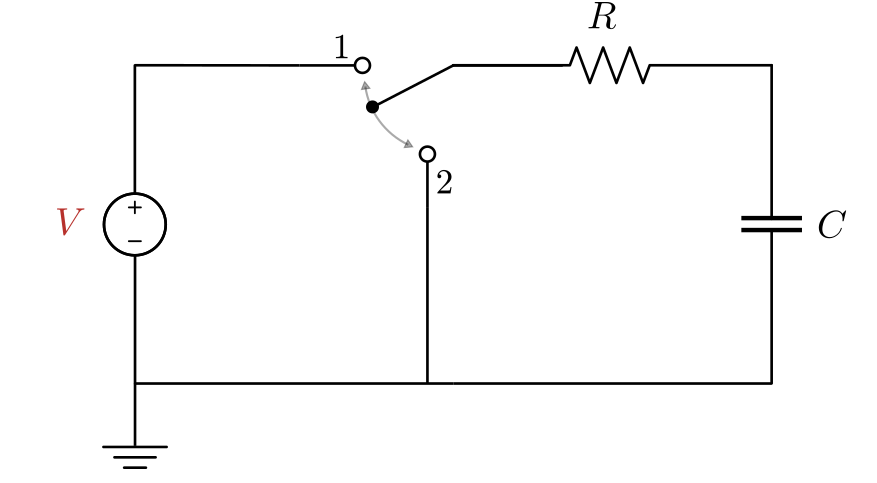
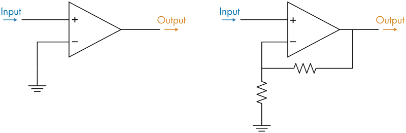

DC Circuit Analysis
Information
This curriculum module teaches DC circuit analysis using interactive
live scripts
and Simscape™ models.
Six essential topics, listed in the table below, are covered.
There are two components for each topic: an introduction and a virtual lab.
The introduction explains the technique and offers opportunities to develop intuition using simulation.
In the labs, you can apply your knowledge to analyze circuits, take measurements, and design circuits to meet requirements.
Learning goals for each topic are described below.
The lab solutions are available upon instructor request. If you
would like to request solutions, find an issue,
or have a suggestion, email the MathWorks online teaching team at
onlineteaching@mathworks.com
Getting Started
 Add-Ons > Get Add-Ons.
Add-Ons > Get Add-Ons.
Products
MATLAB, Simulink®, Simscape, Simscape Electrical™, DSP System Toolbox™
Modules
Examples and Virtual Labs
Learning Goals
Models
Mesh Analysis

MeshAnalysis.mlxMeshAnalysisLab.mlx
MeshAnalysisExample.slx
MeshAnalysisCircuit.slx
Nodal Analysis
NodalAnalysis.mlxNodalAnalysisLab.mlx
NodalAnalysisExample.slx
NodalAnalysisCircuit.slx
Thevenin and Norton Equivalent Circuits

TheveninNorton.mlxTheveninNortonLab.mlx
EquivalentCircuitDemo.slx
TheveninNortonCircuit.slx
RC Circuits

RCCircuits.mlxRCCircuitsLab.mlx
RCCircuit.slx
RCCircuitTau.slx
RLC Circuits
RLCCircuits.mlxRLCCircuitsLab.mlx
RCRLCircuits.slx
RLCCircuit.slx
VirtualOscilloscope.slx
Op Amps

OpAmps.mlxOpAmpLab.mlx
OpAmpOpenLoop.slx
OpAmpFeedback.slx
OpAmpNoninverting.slx
OpAmpCircuits.slx
OpAmpLab.slx
Copyright 2021 The MathWorks™, Inc.